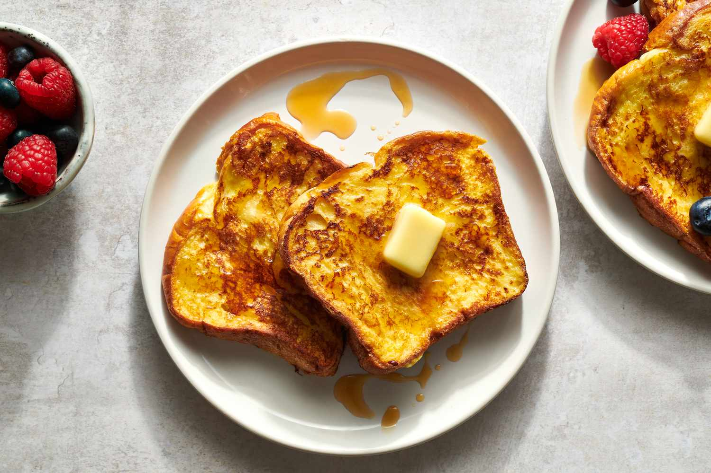

French Toast Recipe

Ingredients
- White Bread: Thick-cut bread is the base for all French toast. Sturdy, dense, slightly stale slices absorb the custard-like egg mixture better than thin, airy ones.
- Eggs: When it comes to French toast, eggs are essential. The proteins solidify once they're heated, which binds the batter together and ensures a rich texture. The fat, meanwhile, adds extra creaminess.
- Milk: You can technically use any liquid to make French toast, though milk is most popular. Not only does milk add the necessary moisture, but the fat gives the batter extra richness. This recipe calls for whole milk because it creates the ideal texture. You can easily substitute half-and-half, cream, or your favorite alternative milk – full-fat varieties will produce the creamiest consistency.
- Vanilla and cinnamon: The best French toast is warm, cozy, aromatic, and sweet. The cinnamon and vanilla in this recipe are optional, but we definitely recommend using them for the most delicious experience. You could even add a little nutmeg or sugar if you feel like it.
Instructions
- Gather all ingredients.
- Whisk milk, eggs, vanilla, cinnamon, and salt together in a shallow bowl.
- Lightly butter a griddle or skillet and heat over medium-high heat.
- Dunk bread in the egg mixture, soaking both sides.
- Transfer to the hot skillet and cook until golden, 3 to 4 minutes per side.
- Serve hot.